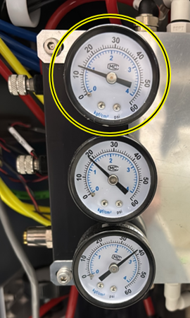
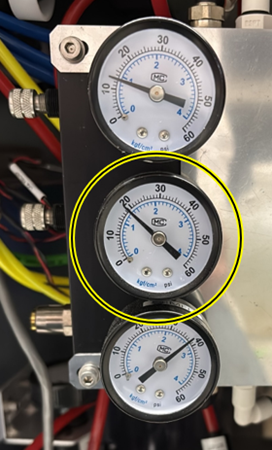

This topic includes information about how to adjust the pneumatic manifold regulators.
Safety Reminder
Servicing the DxI 9000 instrument involves potential risks for pinch and puncture, electrical shock, and exposure to hazardous materials. You must mitigate these risks by taking appropriate countermeasures. See
Safety for more information.
Note: If the instrument enters into a
RED (Stopped) status:
Verify the interlock switch is in the correct position.
Be sure you are signed in to use the BeckmanAdmin account.
In the Console App go to
Menu > Tools > Diagnostics > Intrusive Diagnostics and select
Start Session.
Complete all troubleshooting, adjustments, manual alignments, and maintenance necessary to be able to initialize the instrument to a
GREEN (Ready) status.
Select the
SYSTEM RUNNING button and go to
Stop > Pause to enter the instrument into a
YELLOW (Paused) status.
Accessing the Pneumatic Manifold Regulators
Perform this procedure to access the pneumatic manifold regulators.
While the system is running the exerciser, observe the topmost regulator indicator on the manifold. The pointer should be in the range of 12 to 15 PSI.
Figure 236:

If the pointer is not in the range of 12 to 15 PSI, to increase or decrease the pressure, move the knob for the topmost regulator indicator clockwise to increase the pressure or counterclockwise to decrease the pressure until the pointer is within the desired range.
Adjusting the 20 PSI Regulator
Perform this procedure to adjust the 20 PSI regulator.
While the system is running the exerciser, observe the regulator indicator in the middle on the manifold. The pointer should be in the range of 20 to 22 PSI.
Figure 237:

If the pointer is not in the range of 20 to 22 PSI, to increase or decrease the pressure, move the knob for the topmost regulator indicator clockwise to increase the pressure or counterclockwise to decrease the pressure until the pointer is within the desired range.